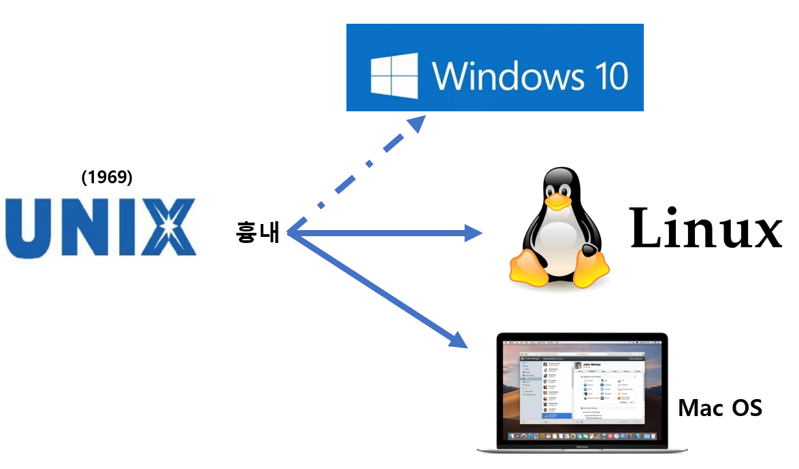
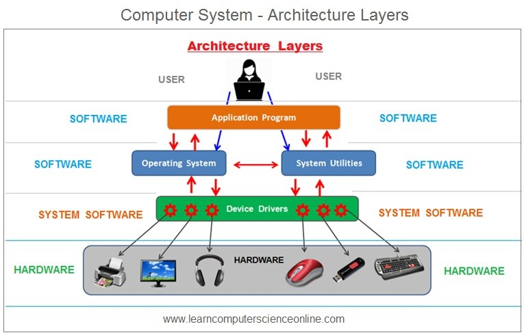

JuicyJerry's Book
#1. OS가 보이는 그림책
OS가 보이는 그림책, ANK Co.. Ltd. 저 | 이영란 역, 성안당
제0장 OS 학습을 시작하기 전에
OS란, Operating System의 약자입니다. OS는 컴퓨터를 관리하고 제어하며 작동시키기 위한 토대를 만드는 소프트웨어를 말합니다. 이를 ‘기본 소프트웨어’라고 부르기도 합니다.
대표적인 OS

하드웨어와 소프트웨어
하드웨어란, 컴퓨터에 사용되는 부품이나 그것들을 조합한 기기를 말합니다.
소프트웨어는 하드웨어를 작동하기 위해서 어떤 처리를, 어떤 순서로 수행하게 할 것인지에 대한 명령을 내리는 것입니다. 소프트웨어는 크게 OS(기본 소프트웨어)와 어플리케이션 소프트웨어(응용 프로그램)로 나뉜다

OS의 역할
프로세스 관리(프로그램의 실행 단위인 프로세스를 관리), 메모리 관리(프로그램에 메인 메모리를 할당하거나 해체, 가상 메모리 관리 수행), 디스크 관리(보조 기억 장치에 파일을 기록, 장치에 기록된 파일을 읽어들임), 네트워크 관리(통신 장비나 네트워크를 제어, 관리)
컴퓨터를 구성하는 주요 부품
OS는 컴퓨터의 하드웨어와 소프트웨어(어플리케이션)를 모두 관리합니다.
OS는 어디에 있는 것일까?
기본적으로 OS는 하드디스크 안에 저장(설치)합니다. 외장형 하드디스크나 USB 메모리 등에 설치하여 사용하는 OS도 있지만 일반적으로 컴퓨터에 내장된 하드디스크에 설치하여 사용합니다.
OS를 설치하지 않으면 어떻게 될까?
컴퓨터는 전원을 켜면 마더보드에 내장된 BIOS가 POST(Power On Self Test)라는 동작 체크를 지가한다. POST는 컴퓨터를 작동시키기 위한 자기 진단 기능으로 CPU와 메모리, 마더보드 상의 칩셋이나 컨트롤러 등 접속되어 있는 다양한 기기를 체크합니다. 기기 체크 중에 문제가 발생하면 화면에 오류 메시지가 나타납니다. OS가 없으므로 ‘Operating System Not Found’라는 메시자가 나타납니다.